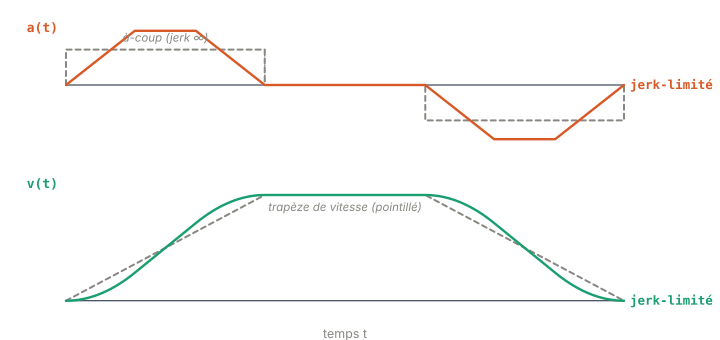
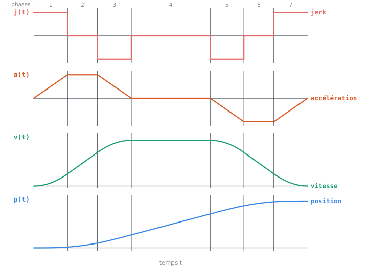

Chapitre 02
Jerk, accélération, et le profil en S
Objectifs du chapitre
- Revoir la chaîne des dérivées cinématiques et situer le jerk parmi elles.
- Comprendre comment on intègre un mouvement quand le jerk est constant par morceaux.
- Voir pourquoi un profil trapézoïdal en vitesse « fait mal » à la mécanique.
- Découvrir le profil en S à 7 segments que Ruckig produit, et l'idée de commande bang-bang du jerk.
1. La chaîne des dérivées cinématiques
Un mouvement se décrit d'abord par sa position p(t). En dérivant, on obtient la vitesse, puis l'accélération, puis le jerk — chaque grandeur mesure la vitesse de variation de la précédente :
Côté unités (en SI, pour un axe linéaire) : la position est en m, la vitesse en m/s, l'accélération en m/s² et le jerk en m/s³. Pour un axe rotatif, on remplace les mètres par des radians.
💡 Intuition. Le jerk, c'est l'« à-coup ». En voiture, l'accélération vous plaque au siège ; le jerk, c'est le moment où cette poussée change brutalement — la secousse ressentie quand le conducteur enfonce ou relâche d'un coup la pédale. Un mouvement doux, c'est un mouvement où le jerk reste borné.
2. Intégrer dans l'autre sens : jerk constant
Ruckig construit ses trajectoires en imposant un jerk constant sur chaque intervalle. C'est le choix qui simplifie tout : si j est constant sur un segment, alors l'accélération varie linéairement, la vitesse suit une parabole, et la position un polynôme cubique. On intègre simplement, une couche après l'autre.
∑ Le calcul. Sur un intervalle de durée t où le jerk j est constant, en partant de (p₀, v₀, a₀) :
Ces trois formules sont le moteur de calcul de toute la suite. Un profil complet n'est rien d'autre qu'une succession d'intervalles à jerk constant : on prend l'état final d'un segment comme état initial du suivant, et on recolle le tout.
3. Pourquoi limiter le jerk ?
Le profil classique en automatisme est le profil trapézoïdal en vitesse : on accélère à taux constant, on roule à vitesse constante, on décélère à taux constant. Élégant sur le papier — mais son accélération est un créneau : elle saute instantanément de 0 à aₘₐₓ, puis à 0, puis à −aₘₐₓ. Or un saut instantané d'accélération, c'est un jerk infini.

Dans la réalité, aucun moteur ne peut délivrer un jerk infini : la commande est écrêtée par les drives, et l'énergie de ces transitions brutales part dans la structure. Concrètement, un jerk non borné provoque :
- des vibrations et des oscillations résiduelles à l'arrêt (l'axe « rebondit » autour de la consigne) ;
- une usure accélérée des réducteurs, courroies et accouplements, sollicités par les à-coups ;
- le glissement de la charge (une pièce mal fixée, un liquide qui déborde) ;
- une sollicitation excessive des drives et des pointes de courant.
⚠️ Piège. Limiter le jerk ne consiste pas à « adoucir » a posteriori une trajectoire trapézoïdale avec un filtre. Un filtre déforme la trajectoire et ajoute du retard, sans garantir les bornes. Ruckig, lui, construit d'emblée un profil dont le jerk est borné par conception.
4. La commande bang-bang du jerk
Comment aller d'un point à un autre le plus vite possible, tout en respectant des bornes sur la vitesse, l'accélération et le jerk ? La théorie de la commande optimale (temps minimal sous contraintes) donne une réponse remarquablement simple : la commande optimale sature. Le jerk ne prend que trois valeurs :
C'est une commande « tout ou rien » (bang-bang) : on pousse le jerk à fond dans un sens, on le coupe, on le pousse à fond dans l'autre. Sans entrer dans le principe du maximum de Pontryagin, retenez l'idée : pour aller vite, on utilise à chaque instant toute la marge disponible sur la grandeur la moins dérivée qui n'est pas encore saturée.
5. Le profil en S à 7 segments
Enchaîner ces phases de jerk donne le profil emblématique de Ruckig : sept segments. La figure 2.2 empile les quatre grandeurs, du jerk (dérivée la plus haute) à la position.

Lecture des courbes, de haut en bas — c'est un jeu d'emboîtement :
- Jerk (rouge) : une suite de créneaux +jₘₐₓ, 0, −jₘₐₓ. Il est borné mais discontinu — il saute d'un niveau à l'autre.
- Accélération (orange) : intégrale du jerk, elle est donc trapézoïdale. Elle monte en rampe (jerk +), reste au plateau (jerk 0), redescend (jerk −).
- Vitesse (vert) : intégrale de l'accélération trapézoïdale, elle dessine le fameux « S » à chaque phase.
- Position (bleu) : intégrale de la vitesse, courbe lisse sans aucune cassure visible.
📝 À retenir. Seul le jerk est discontinu ; l'accélération, la vitesse et la position sont continues. La position est même de classe C² (continue jusqu'à sa dérivée seconde, l'accélération). C'est exactement ce qui rend le mouvement doux pour la mécanique.
🔧 Dans ruckig-scl. L'intégration des états d'un profil est réalisée par la FC
IntegrateProfileStates : à partir des durées et du jerk de chaque segment, plus l'état initial
(p₀, v₀, a₀), elle remplit les valeurs d'accélération, de vitesse et de position
segment par segment — en appliquant exactement les trois formules de la section 2. Tout est calculé en
LREAL (l'équivalent du double C++), pour préserver la précision sur les cumuls.
// SCL — principe de l'intégration segment par segment
FOR i := 0 TO 6 DO
a := a + j[i] * t[i];
v := v + a0 * t[i] + 0.5 * j[i] * t[i] * t[i];
// … idem pour p, puis état final = état initial du segment suivant
END_FOR;Récapitulatif
- Chaîne des dérivées : position → vitesse → accélération → jerk (m, m/s, m/s², m/s³).
- Sur un intervalle à jerk constant : a linéaire, v parabolique, p cubique — trois formules qui suffisent à tout intégrer.
- Le profil trapézoïdal en vitesse impose un jerk infini → vibrations, usure, glissement. Borner le jerk supprime ces à-coups.
- La commande temps-optimal sature le jerk : j ∈ {+jₘₐₓ, 0, −jₘₐₓ} (bang-bang).
- Il en résulte un profil en S à 7 segments : jerk borné mais discontinu, a/v/p continues (position C²).
- Ces sept segments ont des durées t₁ … t₇ — c'est l'objet du chapitre 3.